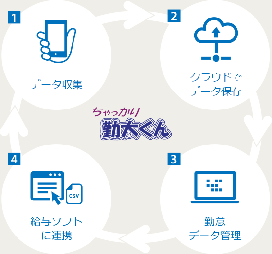

一言でいうと、かんたん便利なインターネットタイムレコーダー！
スマホ・生体認証を含む８種類の打刻方法で実現する出退勤入力機能や、
シフト作成・休暇管理・ワークフロー機能も持ったクラウド型勤怠管理システムです。
ちゃっかり勤太くんを導入することで、従業員の出退勤がインターネット上で管理可能になり、事務作業のボリュームとコストを大きく削減することができます。

１人あたり月額200円～
1
クラウドでのサービス提供開始から14年の歴史！
勤怠管理システムにおいて、いち早くクラウド型のサービスを提供してきた実績があります。
2
サービス累計の利用ID数は170,000件！
様々な環境のお客様に対して、お客様ひとりひとりにあった方法で課題を解決してきた実績があります。
3
シンガポールに進出した1,000以上の日系企業が利用！
シンガポール進出の日系企業の利用ID数は1000件を突破、海外進出に対応した実績があります。


様々な出退勤入力方式
手のひら静脈、指静脈、ＩＣカード打刻、モバイル打刻など利用シーンに合わせた打刻方法を実現。


導入後も安心の
継続サポート
電話とメールで専任のサポートセンターが継続的にサポートします。


画面がシンプルで
わかりやすい！
必要な機能だけを画面に表示。操作に迷わず、簡単に使えます。


楽々シフト管理
エクセルベースでシフト作成が可能。シフトは携帯から確認が可能。


損益管理を実現
作業ごとの労働時間を集計。店舗損益や作業ごと損益管理が可能。


効率的な有給や
休暇管理
ワークフロー機能を搭載。貴社オリジナルの休暇の管理、シフトとも連動します。


給与ソフトとも簡単連携
給与ソフトと簡単にＣＳＶデータ連携が可能。データの出力内容を選択できますので柔軟に連携ができます。


グローバル対応
全世界で利用可能。英語版、時差対応可能。特にシンガポールでは豊富な導入実績があります。


高い信頼性と安全性
国内最高レベルのセキュアなデータセンターを利用し稼動しております。


お弁当・まかない
注文機能
お弁当やまかないの注文がタイムレコーダーで可能。受けた注文はリストアップされ出力が可能。


シフト取り込み機能
複雑なシフトはエクセルベースのシフト表で一発取り込み。


多店舗からの応援対応
他店舗からの応援による出退勤の打刻が可能。打刻した場所のデータも出力可能です。
導入前のヒアリング、
コンサルティング
昨今インターネット販売が多い中、導入前に貴社の就業ルールや運用に対して、経験豊富な専任担当が業務をヒアリング。
運用に対してもご提案します。
導入後の保守サポート体制
導入後も専任の保守サポートチームが運用アドバイスからご相談に乗ります。困ったときには訪問対応を行います。
海外での導入実績も豊富にありますので、海外展開のアドバイスも可能です。

最後までご覧いただきまして、誠にありがとうございます。
弊社は東京と神戸に営業所がございますので、関東及び関西近県へのご訪問やデモを無料にて行っております。
もちろんご来社頂くこともできます（要予約）。
遠方の場合も、リモートによるデモを実施しております。
その他、ご不明な点がございましたらお気軽にお問い合わせフォームかお電話にてご連絡下さい。
03-5833-8808【営業時間】
平日9:00~18:00